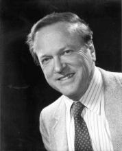

Please note: the AAS Obituaries are temporarily being hosted on this website while their full content is being ingested into the PubPub publishing platform newly adopted by the Bulletin of the American Astronomical Society. When the migration is complete, your existing links will take you to the final, migrated content. Contact peter.williams@aas.org with any questions.
Thomas Gold (1920-2004)
Thomas "Tommy" Gold died of heart disease at Cayuga Medical Center, Ithaca NY on 22 June 2004 at the age of 84. He will be remembered as one of the most interesting, dynamic and influential scientists of his generation. Tommy's paradigm-changing ideas in astronomy and planetary science, while original and bold, were also highly controversial. With his radical work on the origin of natural gas and petroleum, the controversy is likely to continue.
Tommy was born in Vienna, Austria on 22 May 1920, moving with his family to Berlin at age 10 and then, after the rise of Hitler in 1933, to England. His parents were Josephine (nee Martin) and Maximillian Gold, a successful steel magnate. Tommy was educated at Zuoz College in Switzerland where he became an expert skier and developed an athletic prowess that he maintained throughout his life, winning a NASTAR gold medal for skiing at the age of 65. He studied Mechanical Sciences at Trinity College, Cambridge, but much to his disgust his education was interrupted because of internment by the British as a suspected enemy alien. That unfortunate period (I remember him saying to me "Can you believe the stupidity, interring people like me who had fled from Nazi Germany?") had one good outcome: on his first night in camp he met Hermann Bondi who had an important influence on his early development as a scientist. They were both born in Vienna, their parents knew each other, and they were fellow students at Trinity, but this was their first meeting. On release, he went immediately into top-secret radar research for the British Admiralty, working as a team with Bondi and Fred Hoyle in a farm cottage in Dunsfold, Surrey.
Tommy's first published research, which was a Nature paper with R.J. Pumphrey in 1947, was not in astronomy but physiology. He applied his engineer's understanding of positive feedback to develop and test a resonance model for how the human ear determines pitch. His conclusion that pitch discrimination occurs physically in the inner ear and not in the brain was largely ignored at the time, but has since been proved correct.
At about the same time, he started work with Bondi and Hoyle on the steady state theory of the universe. This attractive hypothesis, which was proposed by Tommy, supposes that the universe is infinite in both time and space, but to reconcile this with Hubble's observations of receding galaxies, matter needs to be created continuously. This struck the trio as no more shocking than creating all of the matter all at once. Tommy stated that "in choosing a hypothesis there is no virtue in being timid." The steady state theory stimulated one of the greatest cosmological debates of the twentieth century. The initial opposition to the theory, led by Martin Ryle, was based on number counts of radio sources. Current observations, particularly of the thermal cosmic background radiation, support the rival theory that Hoyle derisively named the Big Bang. The rivalry stimulated much observational radio astronomy and theoretical work on the origin of elements; one positive outcome for Tommy was that he argued that some of the radio sources observed by Ryle must be external to our galaxy and in that, he was certainly correct.
Some of the other problems that engaged Tommy can also be traced back to early conversations with Bondi and Hoyle. In 1955, Hoyle outlined "Gold's pore theory" and the abiogenic origin of hydrocarbons in his book Frontiers of Astronomy, contrasting those ideas with the "curious theory that oil is derived from dead fish." In later years, Tommy was to expand on those ideas, linking the origin of all hydrocarbons to primordial processes that survived the formation of the Earth and Moon. The observation that all petroleum contains clear signatures of biological activity led him to propose that the Earth has a "deep hot biosphere" and it is the action of microbes feeding on methane seeping up from deep in the mantle that gives petroleum the imprint of life.
Tommy made novel and ingenious contributions to many other areas of astronomy, ranging from electromagnetic and dynamical processes in the solar system, to the origin of solar flares, cosmic rays and pulsars. At a time when celestial mechanics was largely concerned with determining the positions and masses of planets and satellites, Tommy suggested to his student Peter Goldreich that the observed excess of orbital resonances amongst the satellites might involve tidal evolution. Goldreich's work on this fruitful topic was later extended by Stanton Peale, another of Tommy's former students, to account for the spectacular melting of Io by tidal dissipation. His work on lunar dust was controversial partly because in lectures and popular articles he raised the possibility, using the analogy of snow-covered glacial crevasses, that deep layers of dust could pose a threat to astronauts. However, his suggestion that the Moon is covered in a layer of dust was essentially confirmed by the Apollo lunar landings. But, while he was right to suggest that the color of the Moon is determined by the space weathering of this dust, he was wrong to argue that the lunar maria are not lava. Shortly after the discovery of pulsars, Tommy suggested that they are rapidly rotating, magnetized, neutron stars whose magnetospheres (a word that he coined) reached the light cylinder beyond which particles could not rotate. This initially controversial idea (he was not allowed to present it at one meeting) was widely accepted after the discovery of the pulsar in the Crab nebula. Tommy showed that particles electromagnetically accelerated by a neutron star could generate cosmic rays, and he linked the resultant power loss with the observed braking of the pulsar's spin.
His unusual talents received early recognition and garnered him many honors. For his brilliant work on human hearing he was awarded a Fellowship at Trinity College. After switching to astronomy, he was appointed Chief Assistant to the Astronomer Royal in 1956, but soon left England for greater opportunities in the United States. He spent two years (1957-58) at Harvard, first as a professor and then as the Robert Wheeler Willson Professor of Applied Astronomy before accepting positions as chairman of astronomy and Director of the Center for Radiophysics and Space Research at Cornell University in 1959. He took great pride in the astronomy department that blossomed into greatness under his leadership. The department, which only had one other faculty member when he was appointed, reflected Tommy's strengths, ranging from radio astronomy and the Arecibo dish, to infrared, theoretical and planetary astronomy. His many distinguished hires included Carl Sagan. At Cornell, he was Assistant Vice President for Research from 1969-71 and the John L.Wetherill Professor from 1971 until his retirement in 1987. His many honors included Fellow of the Royal Society (London); Member of the National Academy of Sciences (US); Gold Medal and George Darwin Lecture, Royal Astronomical Society, London; and Honorary Doctor of Science, Cambridge University. He also served on the US President's Science Advisory Committee, although he came to be a strong critic of NASA and the Shuttle program.
Tommy was a handsome, charming and generous man and a loyal colleague who formed many long-lasting friendships. A witty and articulate speaker, he was regarded by some as a scientific maverick who delighted in controversy. In reality, he was an iconoclast whose strength was in penetrating analysis of the assumptions on which some of our most important theories are based.
He is survived by his second wife, Carvel (nee Beyer) Gold of Ithaca whom he married in 1972, and by the couple's daughter, Lauren Gold of West Palm Beach, Florida, as well as by three daughters from his first marriage to Merle Eleanor Tuberg in 1947: Lindy Bryant of Philadelphia, Lucy Gold of Ithaca and Tanya Vanesse of Carmel, N.Y., and by six grandchildren. He was predeceased by a sister, Elisabeth Carter.
Photo credit: Photograph by Herman J. Eckelmann, Ithaca, New York
Obituary written by: Stanley F. Dermott (University of Florida)
BAAS Citation: BAAS, 2004, 36, 1672
SAO/NASA ADS Bibcode: 2004BAAS...36.1673D